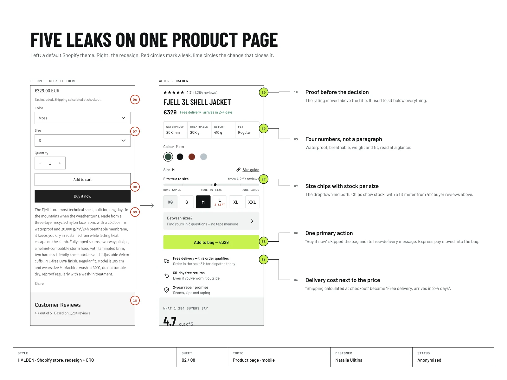
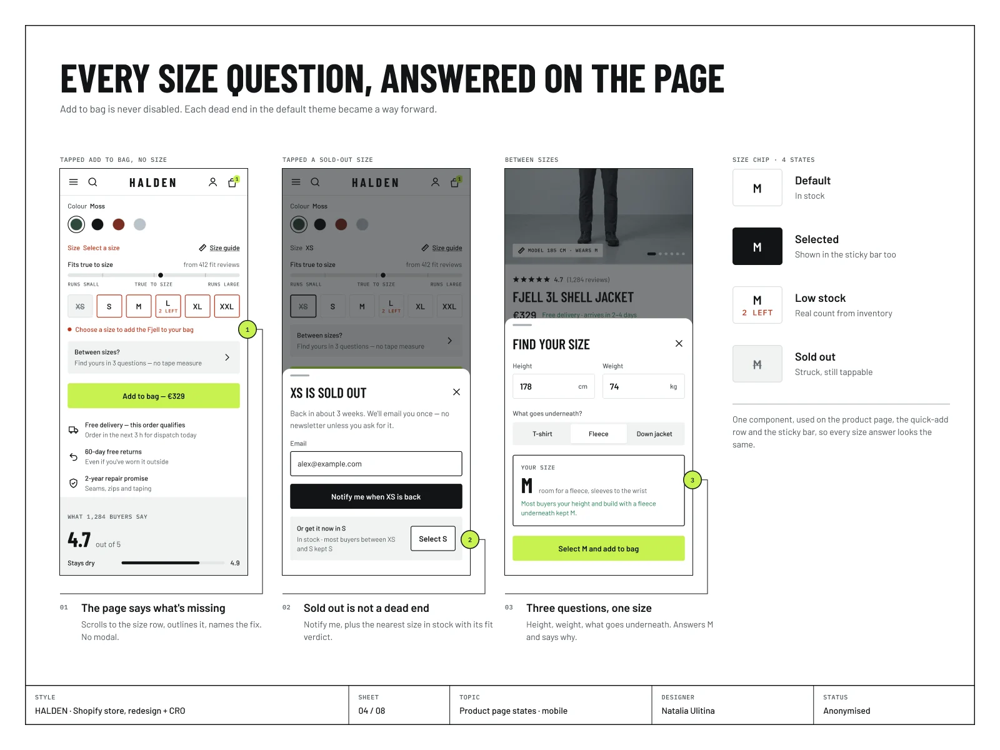
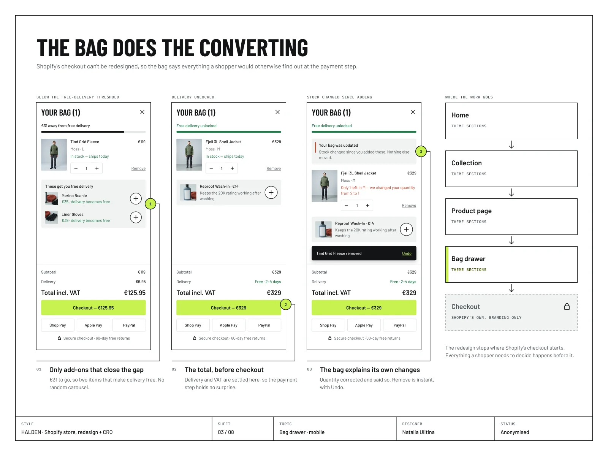
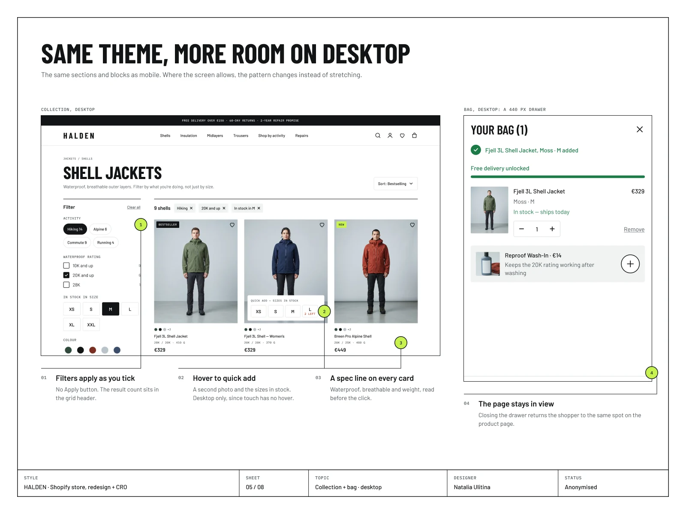
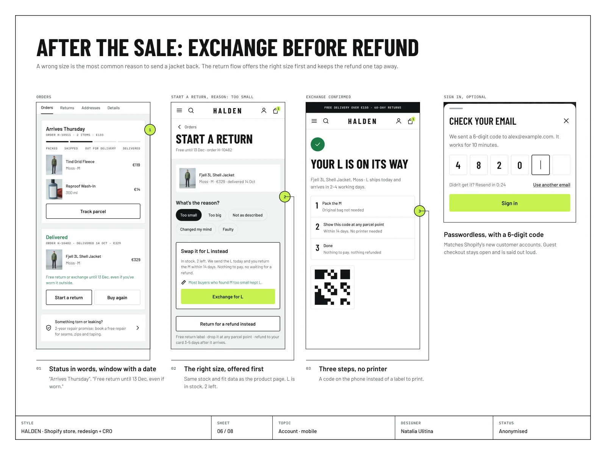
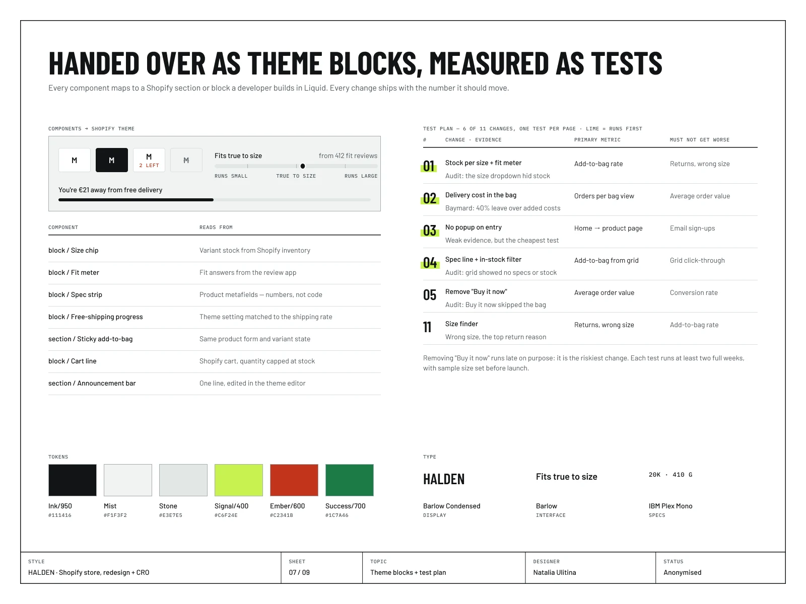
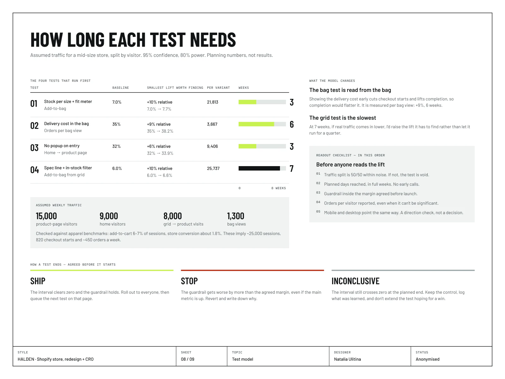
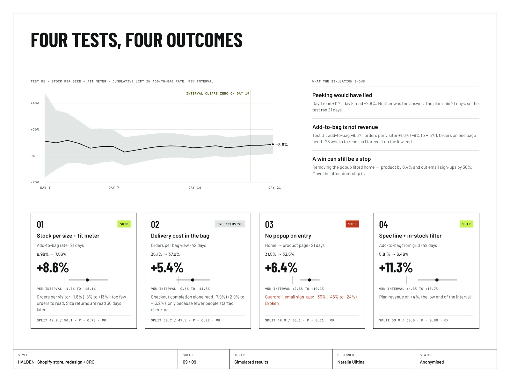

02 · Shopify store · Redesign + CRO
The sale is won or lost at the size row.
A technical-outerwear store on Shopify. The checkout can be branded but not redesigned, so I moved the conversion work to where shoppers actually hesitate: the product page and the bag. Then I planned how to prove each change with an A/B test.
The case in 30 seconds
- The problem
- A default Shopify theme leaks at ten points: stock hidden in a size dropdown, the delivery cost held back until checkout, “Buy it now” skipping the bag, proof buried under the description. And the checkout itself can't be redesigned.
- What I did
- Rebuilt the product page, bag, collection and returns across 41 screens. Every size question is answered on the page, the bag settles delivery and VAT before checkout, and every component maps to a Shopify section or block.
- The result
- 11 changes, each with the metric it should move and the one that must not get worse. The first four tests are sized for real traffic, with stop rules agreed before launch.
01 — Five leaks on one product page
Left, a default Shopify theme. Right, the redesign. Stock per size instead of a dropdown, the rating above the title, four spec numbers instead of a paragraph, one primary action, and the delivery cost next to the price.

02 — Every size question, answered on the page
Add to bag is never disabled. No size picked, a sold-out size, or a shopper between sizes: each dead end in the default theme became a way forward, and the size chip has four states that look the same everywhere.

03 — The bag does the converting
Shopify's checkout can be branded but not redesigned, so the bag says everything a shopper would otherwise find out at the payment step: how far to free delivery, the full total with VAT, and what changed since they added the item.

04 — Same theme, more room on desktop
The same sections and blocks as mobile. Where the screen allows, the pattern changes instead of stretching: filters apply as you tick, quick add on hover, a spec line on every card, and a bag drawer that keeps the page in view.

05 — After the sale: exchange before refund
A wrong size is the most common reason to send a jacket back. The return flow offers the right size first, from the same stock and fit data as the product page, and keeps the refund one tap away.

06 — Handed over as theme blocks, measured as tests
Every component maps to a Shopify section or block a developer builds in Liquid. Every change ships with the number it should move and the one that must not get worse, and the riskiest change runs last on purpose.

07 — How long each test needs
Sample sizes from assumed traffic for a mid-size store, at 95% confidence and 80% power, checked against apparel benchmarks. How a test ends, ship, stop or inconclusive, is agreed before it starts. Planning numbers, not results.

08 — Simulated: how I'd read the results
This board is a simulation, not live data. It shows the reading discipline: peeking on day one would have lied, add-to-bag is not revenue, and a test can win its own metric and still be stopped by its guardrail.

In short
Fix the page where people hesitate, then prove it with a test.
The checkout was off limits, so the work moved upstream, and every change arrived with the number that decides whether it stays.